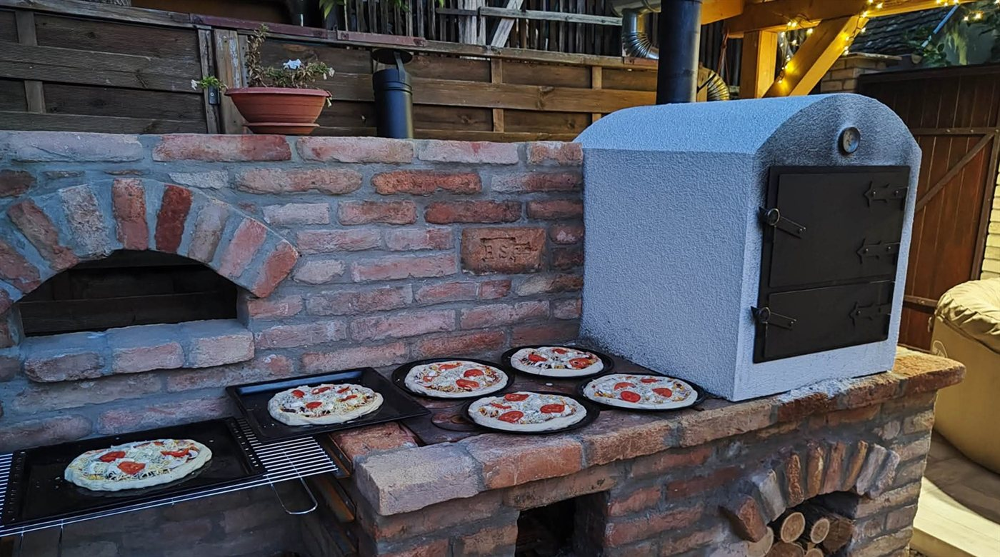
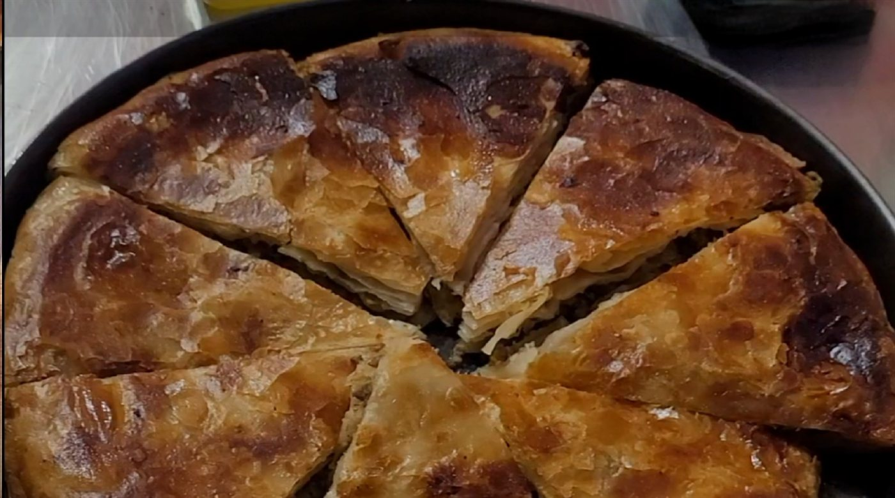
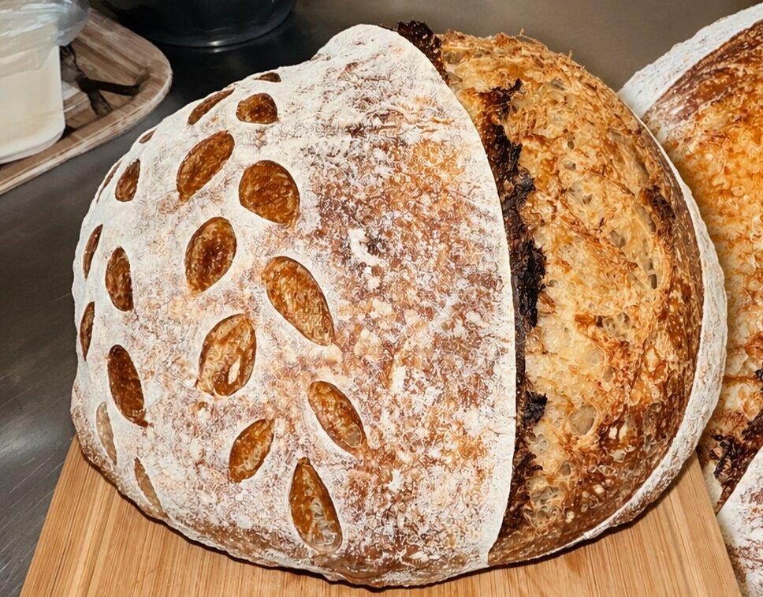
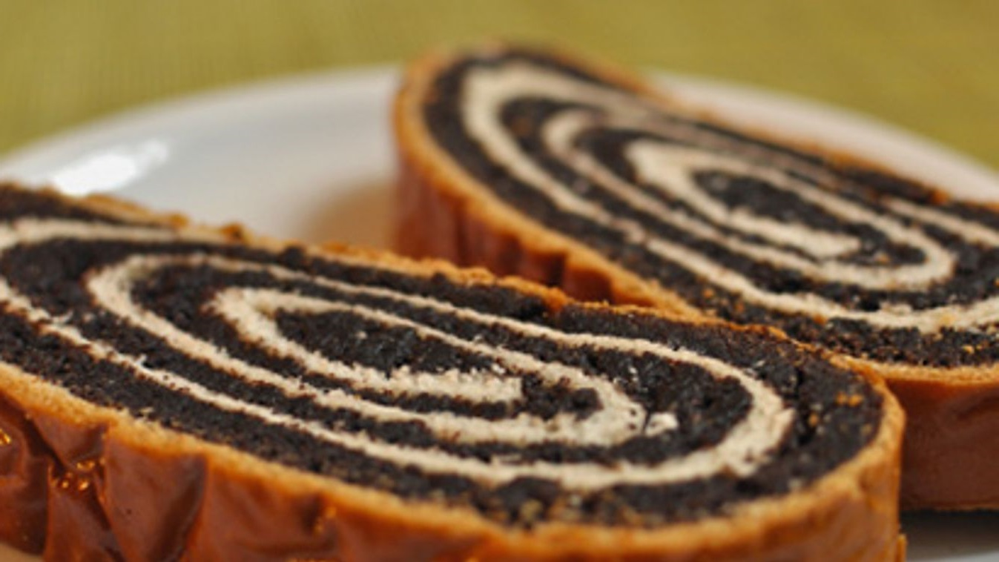
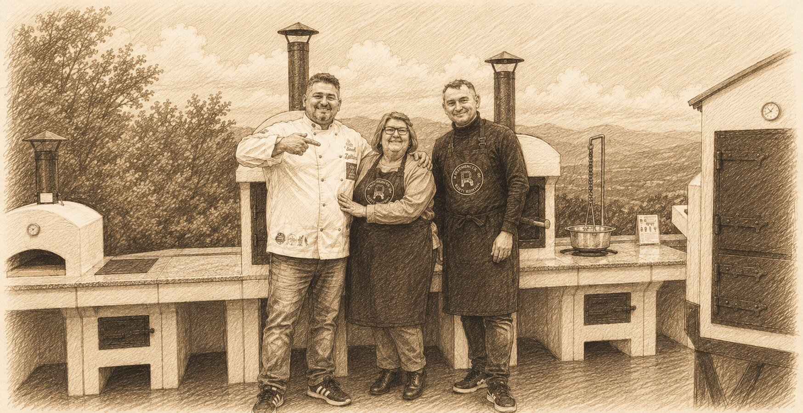

Nápolyi
Kemencés Pizza
Az igazi nápolyi pizza magas hőn, fatüzelésű kemencében. Megtanulod, hogyan varázsolj hiteles pizzát a saját forró kemencédből.
Emlékszel a nagyi udvari kemencéjéből áradó, frissen sült kenyér illatára? Az ország legnagyobb kemencekészítőjeként nemcsak gyártjuk a kerti sütőkemencéket — meg is tanítunk sütni bennük. A vadkovásztól a nápolyi pizzáig, kis csoportban, szívvel.

Kézzelfogható tudás profi kemencehasználóktól — kis csoportban, sok gyakorlással.
Az igazi nápolyi pizza magas hőn, fatüzelésű kemencében. Megtanulod, hogyan varázsolj hiteles pizzát a saját forró kemencédből.

Édes, sós-túrós és húsos változatban. Török eredet, erős közép-európai hagyomány — elsajátítod a fortélyait.

Kalács és kenyér vadkovászból — felejtsd el az élesztőt! Illatos, finom és egészséges házi kenyerek.
Felejthetetlen élmény a menyasszonynak és a barátnőknek — ízekkel, kemencével, közös sütéssel Pécsen.

A karácsony klasszikusa, kemencében sütve. Októbertől indul.
Hamarosan
Nem minősítéssel rendelkező oktatók, hanem emberek, akik évek alatt tökélyre fejlesztették a kemence használatát.
Kis, családias csoportban töltünk együtt egy egész napot — nyugodt tempóban, sok nevetéssel.
Az alapanyagoktól a formázásig: dagasztunk, hajtogatunk, nyújtunk. Élvezni fogod!
Megismered a fatüzelésű kemencét: a hőt, a sütési időt és a kemencés technikákat.
Kemencében sütjük, amit készítettünk, és együtt is fogyasztjuk el. Kávé, tea egész nap.
Viszed a kötényt, a receptet, amit sütöttél — és egy szép nap emlékét.
Az ország legnagyobb kemencekészítőjeként mindent beszerzel nálunk, ami a kerti tűzhöz kell — hogy otthon se érjen véget a sütés.
Akár Cofidis áruhitelre is: a nagyobb kemence is kényelmes, havi részletekben lehet a tiéd.
Irány a webshop →